Sparse state spaces¶
The cmepy.solver.create() function accepts the optional keyword argument domain_states. By default, if no domain_states argument is given, CmePy generates a dense ‘rectangular’ state space with dimensions specified by m.shape, where m is the value of the model argument passed to cmepy.solver.create().
However, often it is far more efficient to specify sparse state spaces. The cmepy.domain module provides a number of utility routines to ease the construction of sparse state spaces. The most important one is the from_iter() function:
- cmepy.domain.from_iter(state_iter)¶
from_iter(state_iter) -> array
Returns array of all states from the state iterator ‘state_iter’.
Provided we have a suitable state_iter, we can create a solver using the sparse state space defined by state_iter as follows:
from cmepy import domain, model, solver
m = model.create(
... # model definition goes here
)
state_iter = ... # create state_iter somehow
s = solver.create(
model = m,
sink = True,
domain_states = domain.from_iter(state_iter)
)
But what is a ‘state iterator’? A state iterator is simply any iterable object
– such as a list, a set, a dictionary or a generator expression –
that contains states. The states provided by the state iterator
are assumed to be length- tuples of integers, for some fixed integer
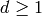.
tuples of integers, for some fixed integer
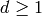.
Example: sparse state space for a mono-molecular system¶
For a concrete example, consider the following mono-molecular system of reactions:
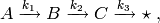
where 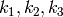 are all positive constants,
and the initial copy counts are 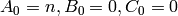, for
some positive integer  .
.
Note
Here, 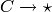 is used to
denote a ‘pure decay’ reaction. This reaction consumes the species  and produces nothing, which is denoted 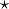.
If this seems distasteful, another interpretation is to simply assume that
the reaction in fact transforms into some product which we ignore.
and produces nothing, which is denoted 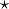.
If this seems distasteful, another interpretation is to simply assume that
the reaction in fact transforms into some product which we ignore.
Let’s consider a reaction count state space for this model. Let each
state 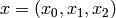 be a triple of non-negative integers,
where 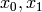 and  denote the counts of the reactions
denote the counts of the reactions
 , 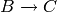 and
respectively.
, 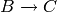 and
respectively.
Since the third reaction may only occur following the second reaction, which
in turn may only occur after the first reaction, which can occur up to
times, the state space 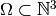 is
defined as:
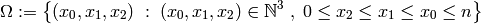
We can define a generator in Python to yield precisely these states:
def gen_states(n):
for x_0 in xrange(n + 1):
for x_1 in xrange(x_0 + 1):
for x_2 in xrange(x_1 + 1):
yield (x_0, x_1, x_2)
return
We call the generator with some chosen value for the initial copy
count of the species  , say 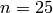,
then pass the result as the domain_states
keyword argument when creating the solver,
after transformation via the function domain.from_iter():
, say 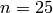,
then pass the result as the domain_states
keyword argument when creating the solver,
after transformation via the function domain.from_iter():
s = solver.create(
model = m,
sink = True,
domain_states = domain.from_iter(gen_states(25))
)
Example: sparse state space for Gardner’s gene toggle model¶
Consider the following system, consisting of the two imaginatively-named
species  and 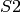 :
and 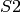 :
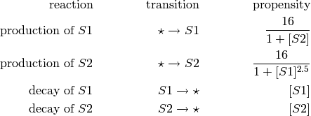
The initial copy counts are zero copies of both
and .
This system is Munsky & Khammash’s formulation of Gardner’s gene toggle
[GCC00], [MK08].
The two species and compete:
copies of inhibit the production of , while conversely,
copies of inhibit the production of . The solution of the
chemical master equation for this system after 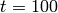 seconds
illustrates the result of these competetive dynamics:

Since most of the probability is concentrated around the axes, we can still obtain a good approximation to the solution of the CME by only considering the states near each axis. We create a state space from the union of two rectangular regions about the axes as follows:
from cmepy import domain
r_a = (66, 6)
r_b = (10, 26)
states_a = set(domain.to_iter(domain.from_rect(r_a)))
states_b = set(domain.to_iter(domain.from_rect(r_b)))
states = domain.from_iter(states_a | states_b)
The function domain.from_rect() transforms the given shapes r_a and r_b to arrays containing all the states in the corresponding rectangular regions. We then contruct sets containing these states, using the function domain.to_iter() to create state iterators over the given state arrays. Finally, we union the two sets states_a and states_b via states_a | states_b, which is equivalent to states_a.union(states_b), then transform the resulting set to a state array by applying the function domain.from_iter().
References
| [GCC00] | Gardner, T.S. and Cantor, C.R. and Collins, J.J., Construction of a genetic toggle switch in Escherichia coli, Nature (2000), volume 403, pp. 339 – 342. |
| [MK08] | Munsky, B. and Khammash, M., Computation of switch time distributions in stochastic gene regulatory networks, Proc. 2008 American Control Conference (June 2008), pp. 2761 – 2766. |